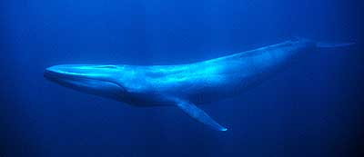
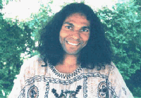

Wieloryby a Złoty Wiek
Artykuł ten został wstępnie zaakceptowany do publikacji w miesięczniku Nieznany Świat wraz z przesłaniem od wielorybów i od Białego Wieloryba.
Wiele jest oznak tego, że żyjemy w przełomowym okresie dziejów ludzkości, a może także Ziemi jako żywej planety, Gaji. Po burzliwym XX wieku z bezprecedensowym w znanej historii postępem naukowo-technicznym i sukcesami kapitalistycznego systemu wartości okupionymi skrajnymi nierównościami zamożności całych narodów oraz upadkiem moralności we wszystkich dziedzinach życia, na naszym globie budzi się wreszcie świadomość konieczności radykalnych przemian. Trudno oprzeć się wrażeniu, że tragedia z 11 września 2001 r. była koniecznym sygnałem dla możnych tego świata i że przyniesie błogosławione skutki, jeśli sygnał ten zostanie przez wszystkich usłyszany i zrozumiany. W przeciwnym przypadku wcale nie trzeba być prorokiem, by głosić rozmaite ,,armagedony", apokaliptyczny finał tej skądinąd wspaniałej cywilizacji.
Dotychczasowa polityka Waszyngtonu, wypowiedzenie światowej wojny ,,terroryzmowi" w duchu zemsty za zniszczenie Bliźniaczych Wież i ograniczania swobód obywatelskich, nie napawa wprawdzie optymizmem, ale równolegle z nią coraz donioślej rozlegają się głosy rozsądku i dobrej woli. Te ostatnie głosy mają od wielu lat niesłabnące źródło i wsparcie na płaszczyźnie duchowej, w skali jednostek i globalnie, w postaci awatarów, mistrzów i oświeconych nauczycieli przebywających w naszych czasach licznie na Ziemi oraz jeszcze liczniejszych istot nieucieleśnionych, które poprzez ,,kanały" zasypują nas gradem przesłań: gróźb, ostrzeżeń, apeli, informacji i nauk.
Zwykle to, co dociera do nas w postaci przesłań z odległych krajów lub z innych, jak to się mówi, wymiarów, ma pozytywny albo nieszkodliwy wydźwięk, ale praktycznie zawsze istotnym problemem jest zabarwienie treści i formy przekazu osobowością ,,nadajnika" czy kanału w przypadku tzw. channelingu. Zarówno istota nadająca, jak i medium bywają na tyle niedoskonałe, że niekiedy naprawdę trudno im zaufać. Podstawowym warunkiem skuteczności nauk czy przesłań jest jednak zaufanie szerokiego odbiorcy do źródła. Wierzę, że np. przesłania Maryji, mimo powszechności graniczącej niemal z pospolitością i być może niezbyt wielkiej atrakcyjności intelektualnej, mają ogromne znaczenie praktyczne, dlatego że ludzie wierzą Jej, zwłaszcza gdy przekazy przychodzą przez dzieci o jeszcze nieskażonych osobowościach. Na drugim biegunie postawiłbym przeładowane intelektualną ekwilibrystyką przesłania przychodzące przez osoby dorosłe obarczone przekonaniem o swojej wyjątkowości i zaawansowaniu duchowym, czyli media z dużym ego.
Przedstawiane tutaj przesłanie Wielkiego (The Great One) do ludzkości niesie doniosłe treści i ładunkiem intelektualnym niebezpiecznie zbliża się do tego drugiego bieguna. Zobowiązuje to do możliwie rzetelnego przybliżenia osoby pośredniczącej i okoliczności towarzyszących odbiorowi, tym bardziej że może ona odegrać kluczową rolę w obecnych przemianach na Ziemi.
|  | |
| Płetwal błękitny |
W młodości podczas wypadu w górzyste tereny południowych Indii Kiara spadł w ponad 60-metrową przepaść i, po krótkiej wycieczce na drugą stronę zasłony śmierci, gdzie podjął ważną decyzję, ocknął się na dole cały, chociaż nieco poturbowany. To wydarzenie ukierunkowało jego dalsze życie na poszukiwania duchowe.
|  | |
| Kiara Windrider |
Czytelników ,,NŚ" niewątpliwie zaciekawi to, że Windrider twierdzi, iż potrafi podróżować w czasie (być może stąd nazwisko 'Wietrzny Jeździec'; Kiara wspominał też o podróży na 'wietrze duszy') i że w pewnym sensie przybył tutaj z odległej przyszłości. Z tego właśnie powodu w imieniu wszystkich wzniosłych mistrzów gratuluje ludzkości, że uniknęła najgorszej z trzech możliwości, jakie jeszcze 10–20 lat temu miała przed sobą — totalnej zagłady. Ludzkość stoi obecnie tylko przed dwoma możliwymi scenariuszami dalszej ewolucji: lepszy to ten, w którym absolutnie wszyscy ludzie przejdą na wyższy poziom świadomości, a drugi — podział ludzi na tych, którzy będą chcieli i będą gotowi na przejście do czwartego (lub wyższego) wymiaru i tych, co niestety pozostaną w trzech wymiarach, aby odpracowywać swoją karmę (bagaż uczynków ze wszystkich wcieleń) na równoległej Ziemi, co może skończyć się destrukcją. Co zatem z prawem karmy w tym najlepszym scenariuszu? Otóż wyższym od prawa karmy jest prawo łaski. Prawo łaski ma zadziałać wówczas, jeśli dostatecznie dużo ludzi przebudzi się do stanu świadomości, w którym przebaczy wszystkim swoim winowajcom (włącznie z sobą samym). Podobno są duże szanse na ten optymistyczny scenariusz, dlatego Windrider przeżywszy już raz czekające nas przebudzenie wrócił z przyszłości, by nam pomagać.
Autor mówi, że w naszej rzeczywistości żyje obecnie wielu podróżników w czasie i że ma to wielkie znaczenie. Cytuję: Gdyby nie nasza interwencja w węzłowych momentach, wasza planeta byłaby dziś wymarła. Nie dziwi was, dlaczego nie spełniły się niektóre z bardziej katastroficznych przepowiedni Edgara Cayce'a, Nostradamusa i rozmaitych starożytnych pism? O ,,Filadelfijskim eksperymencie" i jemu podobnych, o których niektórzy sądzą, że były fikcją, Windrider pisze, że chociaż pierwotne intencje były w pewnym stopniu dyskusyjne, eksperymenty spowodowały korzystny efekt osłabienia przesłony odgradzającej nas od wyższego wymiaru i m.in. umożliwiły interwencję podróżników w czasie.
Zdaniem Kiary, to co obecnie dzieje się na Ziemi, odbija się na całym Stworzeniu. Na przestrzeni wszystkich wszechświatów rozpoczyna się całkiem nowy cykl ewolucyjny, a ta mała planeta nazywana Ziemią ma w tym procesie kluczową rolę do odegrania. Nieprzypadkowo tak się składa, że uważnie przygląda się nam szeroka galeria obserwatorów. Ma to związek z faktem, że niektóre z najwyższych istot w Stworzeniu są współcześnie wcielone na Ziemi równolegle z najbardziej zróżnicowanym kompleksem form życia, jaki kiedykolwiek istniał.
Czy kogoś głoszącego takie ,,herezje" można uznać za wiarygodnego? Trudna to sprawa. Niemniej, niech Czytelnik jeszcze nie rezygnuje. Ten stosunkowo młody człowiek (Kiara urodził się w 1959 r.) wywodzący się z Indii, ale od czasu studiów mieszkający w Stanach Zjednoczonych, w jednym z artykułów zamieszczonych w październiku u.r. w internecie wyznał, że przed wielu laty złożył rytualną ofiarę swojego życia za życie Ziemi. Przysiągł, że jeśli zajdzie potrzeba chce za nią rzeczywiście oddać życie po to, by Ziemia mogła żyć i ostatecznie wznieść się na wyższy poziom. I wygląda na to, że istotnie dziś ryzykuje własne życie, ale o tym za chwilę.
W moim dotychczasowym rozumieniu osoby wielce uduchowione, zwłaszcza oświecone, nie walczą otwarcie o zmianę stosunków społecznych, nie mieszają się do polityki. Wynika to z tego, że one wiedzą, iż mimo pozorów świat jest doskonały, a ponadto są wyzute z wszelkich pragnień doczesnych, nie mają ego. Rozumiejąc, że ciało jest jedynie tymczasowym wehikułem dla duszy, nie boją się śmierci i właściwie są nieustraszone. Tutaj najwyraźniej mamy inny przypadek oświecenia. Ten publiczny Kiara przypomina mi raczej wielkiego Jezusa z Nazaretu, bądź Mahatmę Gandhiego, niż np. Dźiddu Krisznamurtiego czy Ramanę Maharsziego, nie mówiąc już o Babadźim, który ponoć jest jego integralną częścią. Oto w liście otwartym z 5 lutego b.r. wypunktował 77 posunięć George'a W. Busha w ciągu rocznej jego kadencji godzących w interes publiczny (od złagodzenia kontroli nad genetycznym modyfikowaniem zbóż, do usunięcia szefa Służby Lasów, Mike'a Dombecka, i mianowania na to stanowisko lobbysty przemysłu drzewnego). Na koniec tej litanii dużymi literami napisał: ,,Czy uwierzycie, że wszystko to jest zaledwie czubkiem góry lodowej wszystkich złych posunięć Bushvadera & Co.?" (przezwisko Bushvader rymuje się z invader czyli najeźdźca). We wspomnianym wcześniej artykule taką postawę tłumaczy tym, że chociaż nie uważa się za polityka, gdyż zawsze pragnął mówić o pokoju, uzdrawianiu i wizji jedności, lecz nie oznacza to, że ma chować głowę w piasek. Sugeruje tam otwarcie, iż być może niewielka grupa bardzo wpływowych ludzi, o których mówi się jako o ,,tajnym rządzie" albo ,,Illuminati", stoi za wydarzeniami z 11 września, a celem miało być wywołanie atmosfery strachu, po to by ludzie w Stanach i na całym świecie dobrowolnie zrzekli się swobód obywatelskich. Kiedy rozejrzałem się po internecie za zarzutami wobec oficjalnych poczynań administracji USA, przestało mnie dziwić, że Kiara przyznał, iż publiczne mówienie w taki sposób wymagało odeń zmierzenia się z własnym strachem.
W rozdziale 4 i 5 książki Doorway to Eternity zapoznajemy się z trzecim doświadczeniem życiowym Kiary. W 1999 r. pływając w zatoce na Hawajach zaprzyjaźnił się z delfinami, właściwie zakochał się w nich, a potem z wielorybami. To intymne zbliżenie zaowocowało najpierw zanurzeniem się w świadomość Gaji, następnie przesłaniem od pewnej wielorybiej matki, a w kilka dni później od Białego Wieloryba. Niedługo potem z dreszczem przejęcia wysłuchał kobiety, która nic nie wiedząc o przesłaniu poinformowała go, że w pobliżu wybrzeży Australii zauważono młodego białego wieloryba!
Widzimy więc, że Kiara ma niejako kilka twarzy. Przed spotkaniami z czytelnikami bądź wykładami jest prezentowany ponadto jako: terapeuta, poeta, astrolog, uzdrawiacz i badacz praktyk mistycznych i szamańskich. Mam nadzieję, że te fragmentaryczne informacje pomogą Czytelnikom zdecydować o wiarygodności tego mistrza i nie wątpię, że uznają oni postać Kiary Windridera za sympatyczną, zaś znających angielski zachęcą do sięgnięcia po tę wartościową książkę, której znaczenie przyrównałbym do znakomitej i uznanej Autobiografii jogina. Oby szybko znalazła się na półkach polskich księgarń.
Jeśli Kiara Windrider ma rację, to jaka przyszłość jest nam pisana? W jeszcze jednym otwartym liście, z 1 stycznia b.r., zastanawia się on jaki będzie ten rok i twierdzi, że będzie jak żaden dotąd. Z ludzkim niepokojem i duchowym podnieceniem oczekuje najlepszego okresu, ale i najgorszego, z bezprecedensowymi wydarzeniami, które na zawsze zmienią nasze życie. Kiedy piszę ten tekst (koniec czerwca 2002 r.), nic szczególnie wielkiego jeszcze się nie wydarzyło. Pamiętam też, że tenże Kiara kilka miesięcy wcześniej pisał, że te wielkie przemiany dokonają się w ciągu dwóch lub trzech lat. Mój Nauczyciel, Bhagawan Śri Sathya Sai Baba, zaś na początku tego roku powiedział bardzo konkretnie, a zdarzyło się to Mu w tym kontekście po raz pierwszy (dotąd mawiał: zobaczycie to; już niedługo; zanim odejdę), że oczekiwany pokój na Ziemi, Złoty Wiek będzie za 5 lat, w 2007 r. Głębię spodziewanych zmian dobitnie ujął Babadźi w przekazie (przez Kiarę) krótko po pamiętnym 11 września: W nadchodzącym czasie nikt nie będzie mógł przesiadywać za murem obojętności, apatii i podawania w wątpliwość. Mury te są burzone! Rozpoczęła się planetarna pobudka. Ostatnia trąbka zagrała. Rozegrają się wielkie karmiczne dramaty. Gdy przebudzą się serca i dusze, z wnętrza wyrwą się okrzyki wolności i puszczą pasy strachu, jakie niewoliły ludzkość przez długie eony [...] Zaprawdę jest to cudowny czas, czas kiedy światło rozjaśni wszystkie ciemne miejsca ludzkiego serca, tak by wszystko dotąd zakryte zostało ujawnione i przetopione w wielkim kotle budzenia ludzkości. Wypada tylko życzyć sobie, by jak najprędzej spełniły się te najoptymistyczniejsze zapowiedzi.
Jeszcze kilka zdań post scriptum. Dla rozwiania pewnych wątpliwości przy tłumaczeniu przesłania od Wielkiego skontaktowałem się z Kiarą prosząc o wyjaśnienia. Bardzo szybko otrzymałem wyczerpującą odpowiedź wraz z dodatkowymi sugestiami. Ogromnie się ucieszył, że w Polsce podjęliśmy ten temat i chciałby także polskiego tłumaczenia swojej książki. Prosił by, jeśli uznamy za stosowne, po przesłaniu Białego Wieloryba podać następującą informację:
Marynarka Stanów Zjednoczonych robi doświadczenia z użyciem sonarów o częstotliwościach w niewyobrażalny sposób szkodzących ssakom morskim, szczególnie wielorybom i delfinom. Skutkiem tego wiele z nich zginęło.
Ostatnia (czerwiec 2002 r.) inicjatywa Kiary Windridera to Dni Prawdy.